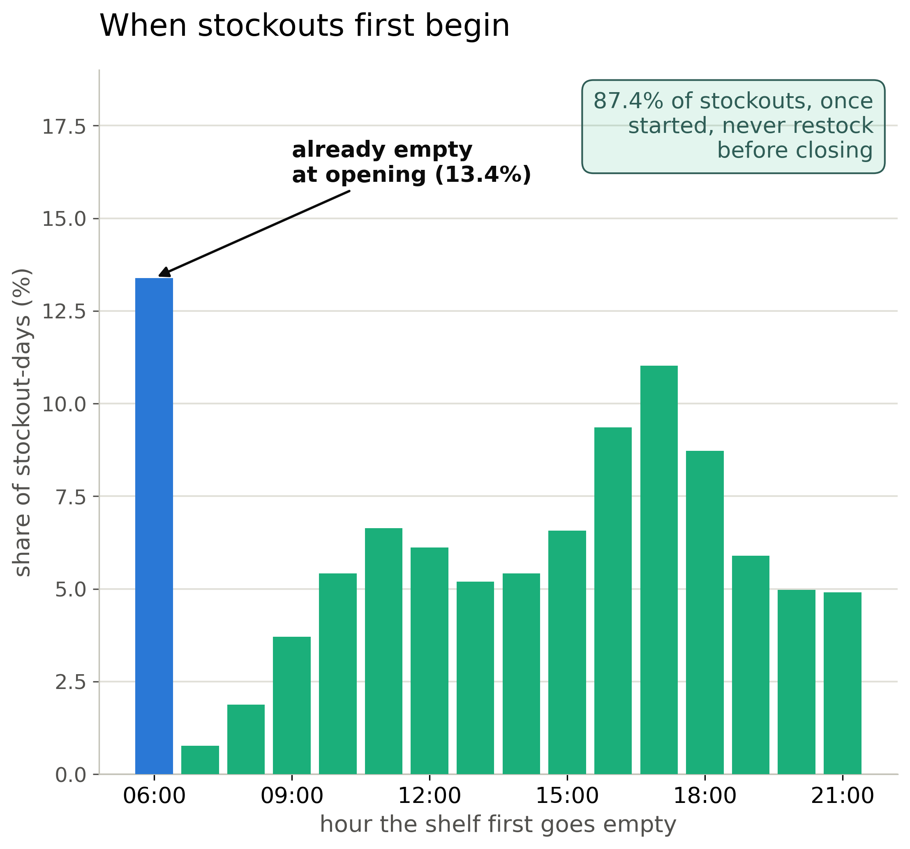
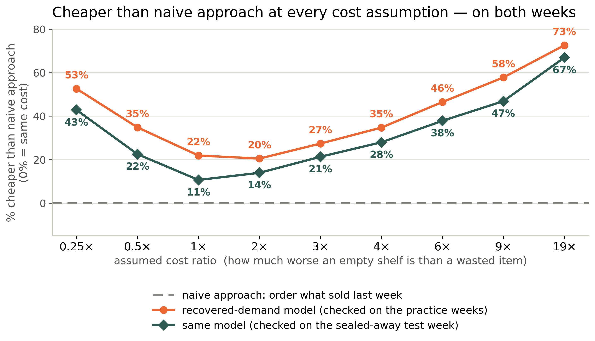
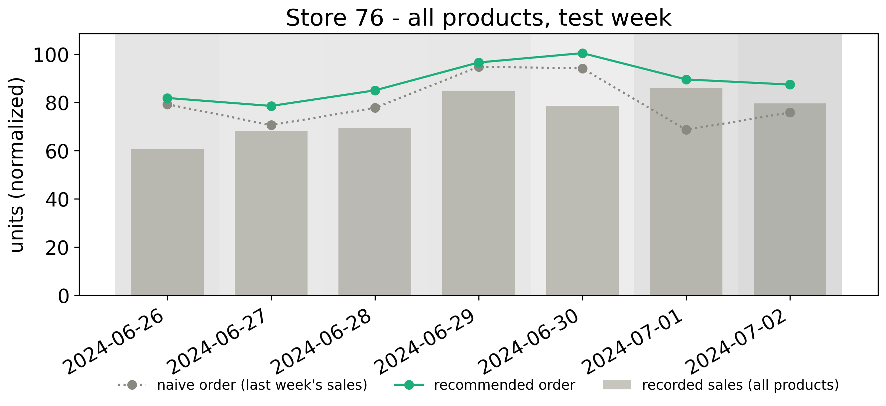

Objective: Recover the demand that stockouts hide, forecast a realistic best-to-worst-case range for it, and use that to decide exactly how much stock to order: a better order, not just a better forecast.
Success: cheaper than “order what sold last week” at every plausible cost ratio.
Figure 1. Stockout timing. Once out, it stays out: 87.4% never restock before closing (13.4% already empty at opening).A representative, whole-store draw: 100 seeded stores, 5,601 series, frozen calendar.
Raw sales undercount once a shelf empties. Recovery fills those hours with a modelled selling rate, floored at what was observed.
Two model types × two data types = 4 versions, scored on validation weeks never trained on. Six quantiles each, not just the median.
Widens the forecast range so a stated 80% band actually contains truth 80% of the time.
Converts the forecast into an order at the percentile a cost ratio implies, checked against naive practice under 9 assumptions.

Figure 2. Cost sweep vs. naive rule. The savings are smaller on the sealed test week than on the validation weeks, but still real at every cost assumption. Both are averages over a handful of days, so treat them as ranges, not exact figures: the true saving is likely 30–39% on the validation weeks and 25–31% on the test week.The three policies below are the same recovered-demand forecast, each ordering at a different percentile. The naive rule is simulated too, not raw data: it orders whatever sold last week.
Store #76 (closest to median in the subset: 43.8% of product-days out of stock, 57 products), at a stockout costing 2× a wasted item: stockout days 34.7% (of product-days); demand met 90.5%, waste 17.1% (both % of demand); cheaper than naive 26.6% (vs. last week’s sales).

Figure 4. One store, test week. Illustrative only. The 100-store aggregate is the evidence. Darker shading = more of the store was stocked-out.All four versions (TFT/XGBoost × raw/recovered) were ordered and scored the same way against the naive rule, at the cost assumption cu/co=4 (a stockout costs 4× a wasted item), on the sealed test week. Higher is better.
Table 2. Percent cheaper than naive, sealed test week, by architecture and training target.| % cheaper than naive | Test week |
|---|---|
| TFT, raw | 9.2% |
| TFT, recovered | 28.0% |
| XGBoost, raw | 0.8% |
| XGBoost, recovered | 13.4% |
Checked on full-shelf days instead; no stock-on-hand data to confirm the worst days directly.
One random draw of 100 stores. We tested how much savings could wobble, not a different draw’s winner.
Tested across a range (Final Ordering Decision), not measured.
Stock-on-hand/delivery data would confirm recovery directly; recorded spoilage would make waste observed.
A stockout corrupts the training label, not just the sale (previous card). A better architecture can’t undo a bias baked into the data; only recovering it can.
Bottom line: every policy tested is cheaper than “order what sold last week”. Which one to run is a store’s call, based on whether stockouts or waste cost it more.